I made
kumot legenerator, a webtoy that draws this Asian retro blanket pattern with random
procedurally generated flowers.
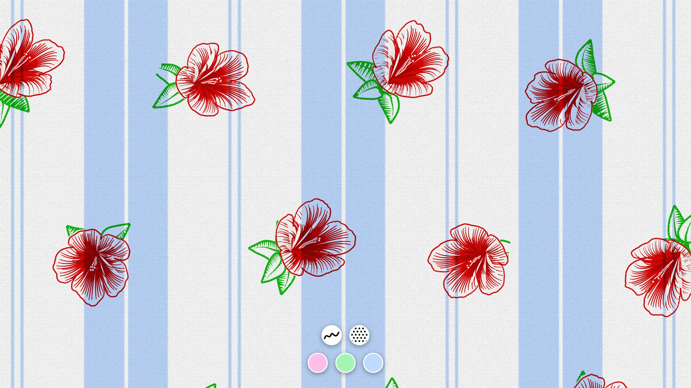
Lore
Back in the Philippines, seemingly every home had this exact same kind of
blanket since decades ago:
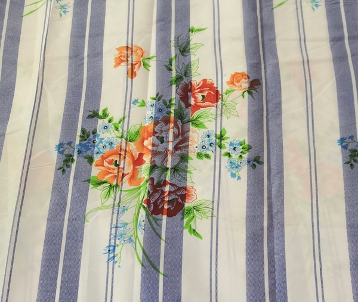
it’s giving nostalgia
I’ve also had these back home growing up. It was comfy and pleasantly
airy.
Apparently everyone else, not just in the Philippines, even in Indonesia and
Malaysia too, had the same childhood blanket. That is, judging from several viral
social media posts years ago.
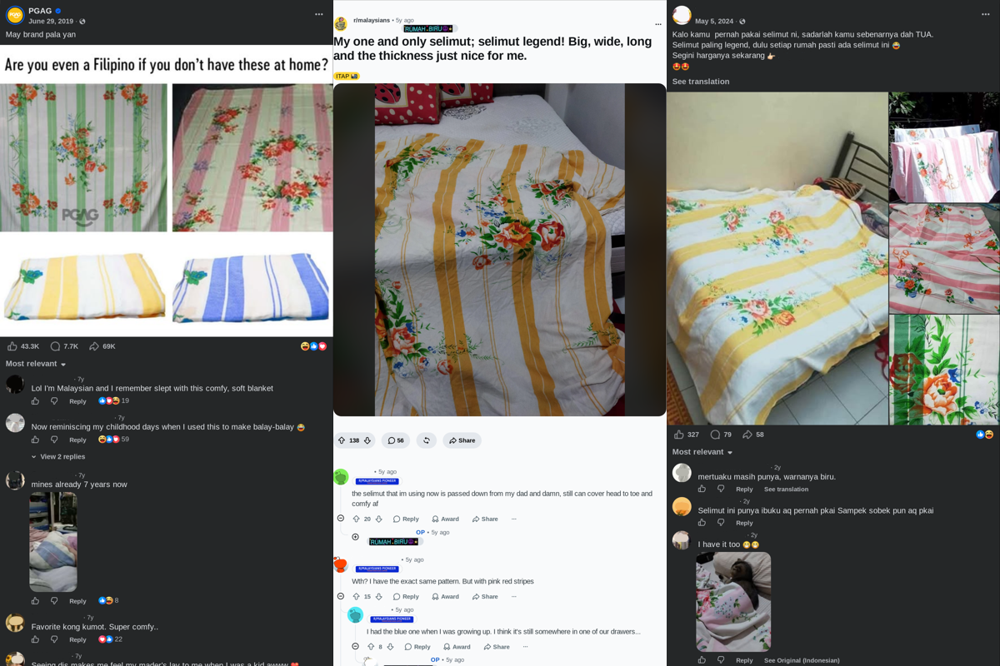
I wonder how these got around so much back in the day? Anyway, I thought I’d
turn it into a webpage.
As a web toy
The name ‘kumot legenerator’ comes from kumot, which literally means
‘blanket’ in Tagalog. Apparently, it’s legendary because in
Malaysia/Indonesia, it was called selimut legend (where
selimut means blanket). And that’s why the second word is that way (It’s not French).
[kú•mot] noun
blanket.
some dictionary
Features include choosing the colors, resizing the pattern, placing flowers,
and having fun.
This post I go over how I created it, and there’s a gallery at the end.
Try it out first if you want!
Drawing the stripes
It starts with the base striped pattern. I’ve looked up many examples
online, and while proportions vary, there is a consistent pattern. There’s a
main repeating band of color on a white field; each colored band has one
thin white stripe in the middle. Then between each band, around the center
of the gap a pair of colored stripes.
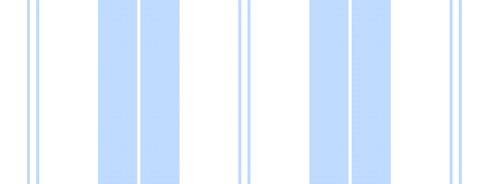
Basic texture is also applied using tiled translucent gradients and some
pre-generated noise to make it feel like a tangible sheet. Something
ma-lambot.
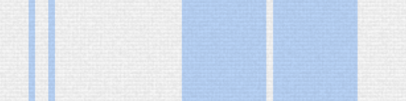
I think there were three/four ‘standard’ colors? I put a hue selector at the
bottom of the app to select from the same typical colors you’d find irl.
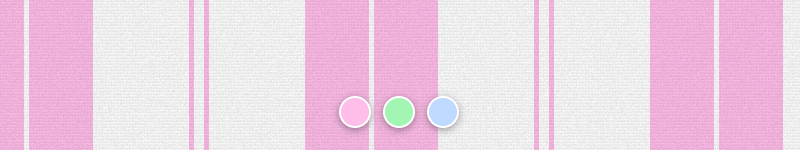
On flowers
I spent the most time on the flowers. The flowers on the original blanket
seemed to be block printed from hand-drawn templates. They were sufficiently
intricate and was a high challenge to replicate (unless you’re
abeto).
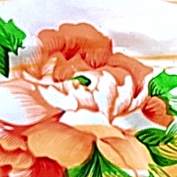
best photo I could get
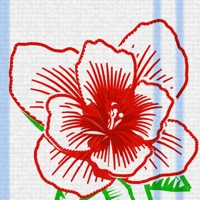
the attempt
The trick was to work in polar coordinates. If you laid out angle and
distance as x- and y-coordinates, it becomes more natural to work with
floral shapes using regular math functions. A simple sinusoid in polar
coordinates produces the basic lobes for the petals, see
regular sine
polar sine
The contour is further shaped by an exponent. Remember that 0x =
0 and 1x = 1 and anything in between stays between 0 and 1, no
matter the exponent. The exponent essentially describes how full or thin the
petals are, so we could go from daisy to hibiscus and everything in between.
hibiscus-ish
daisy-ish
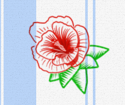
small exponent = big petals
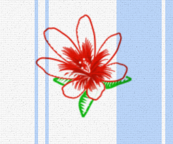
large exponent = narrow petals
Our polar sinusoid still looks unnatural and perfectly geometric. Let’s make
some noise. A simple coherent fractal noise (e.g. Perlin, simplex) gives
that natural imperfection.
geometric
noisy
Some flowers have more than one layer of petals. This is easy, we just draw
the same thing smaller with some angular offset. Draw order is important!
Back to front.
single layer
multilayer
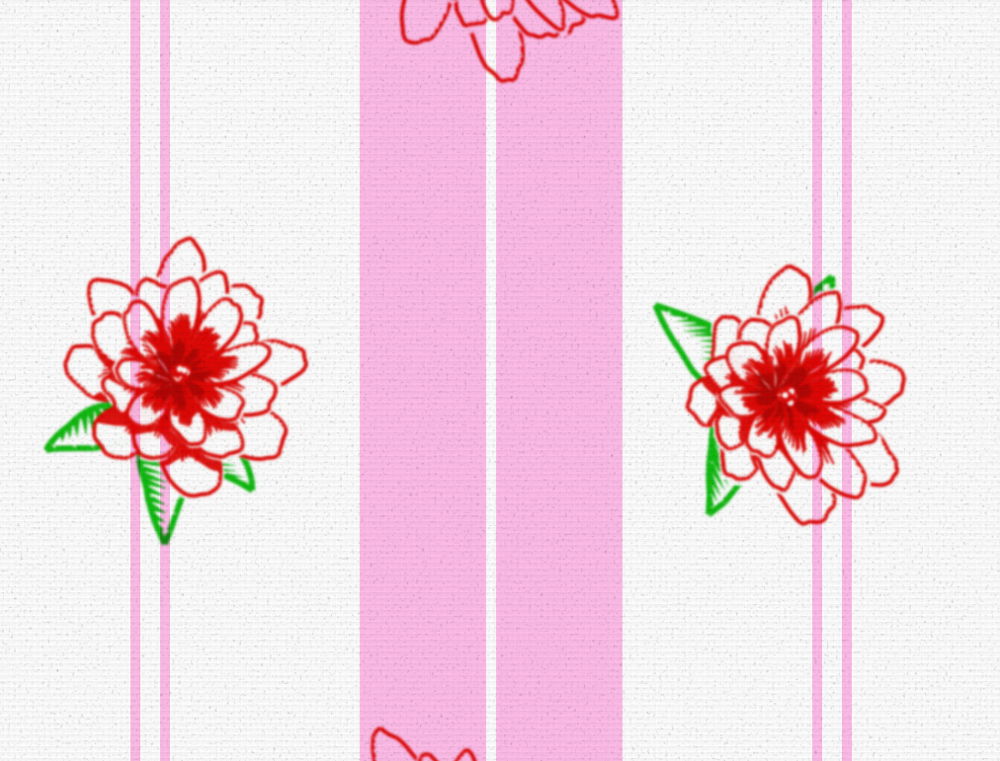
The rest of the details are simple curves and shapes I added and built up over time as I stared at it.
Together they give a lot of depth.
The trick I used to fake 3D was to bias each
point of the flower towards a certain facing direction
proportional to its distance from the center.
facing
veins
stamen
That’s basically the core recipe. Every possible parameter is randomised so
you could get lots of variation using the same procedure.
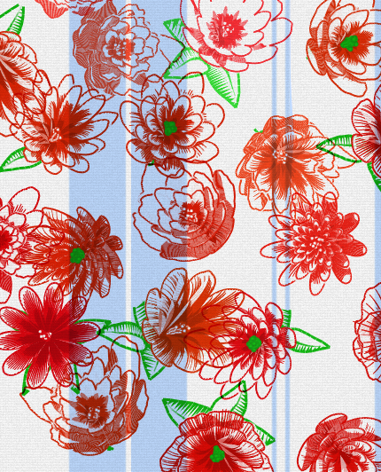
As for the leaves, I didn’t spend too much time on them. I was pretty much
done by the time the flowers were in a good state. Maybe one day. I’d have
liked some branching vine/stems creeping around the flowers.
See more captures in the gallery below!
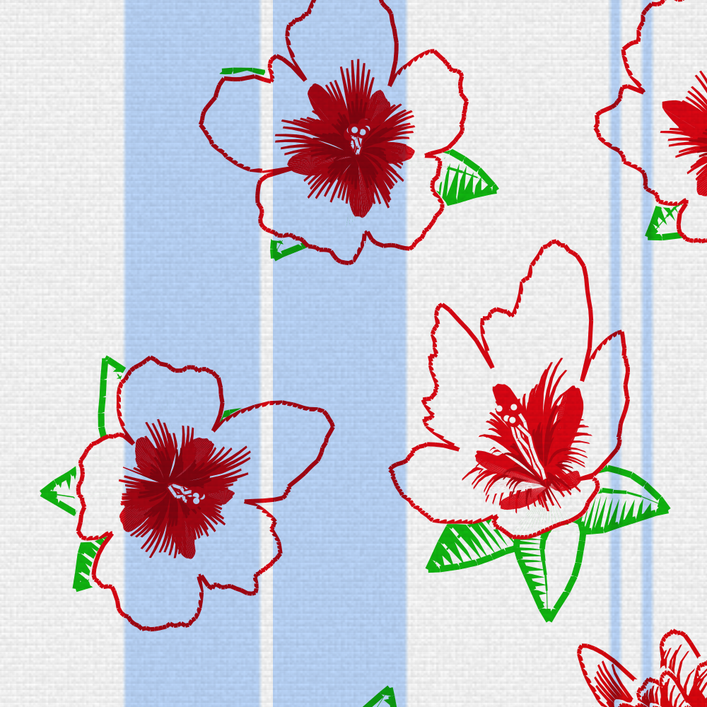
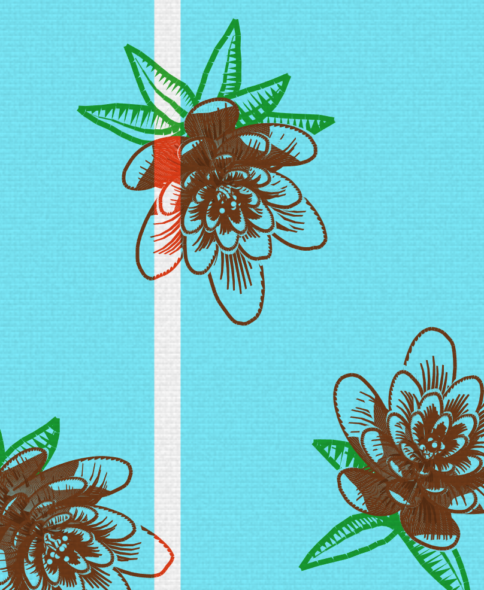
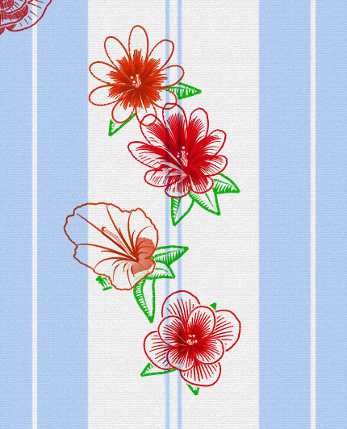
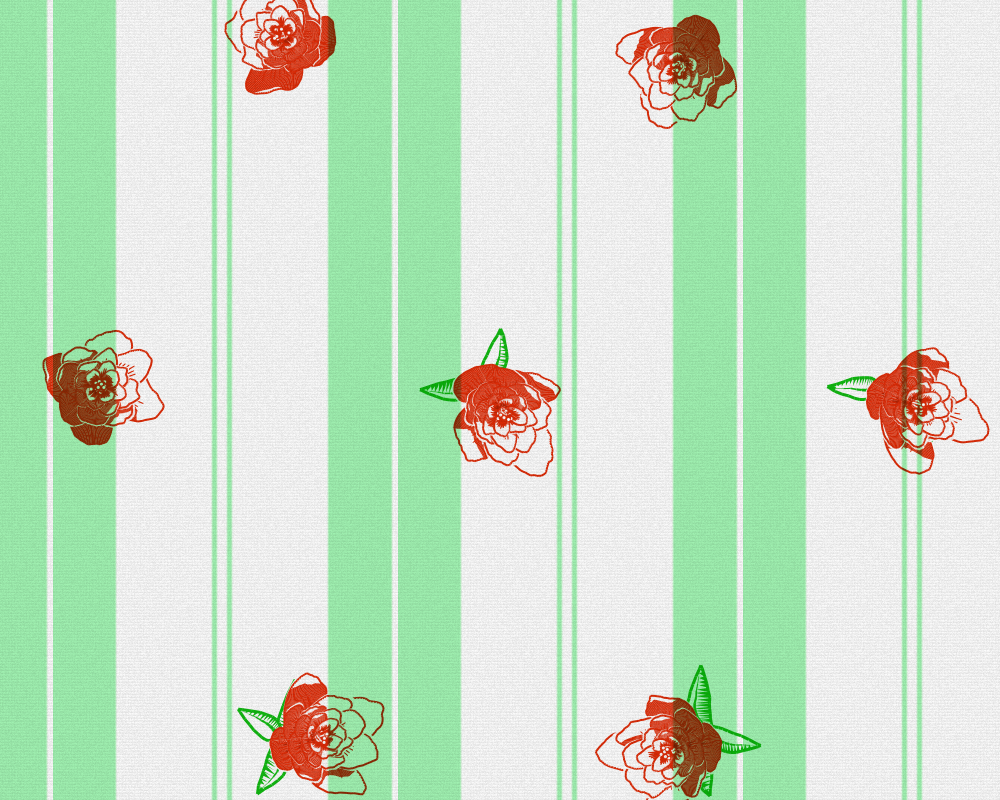
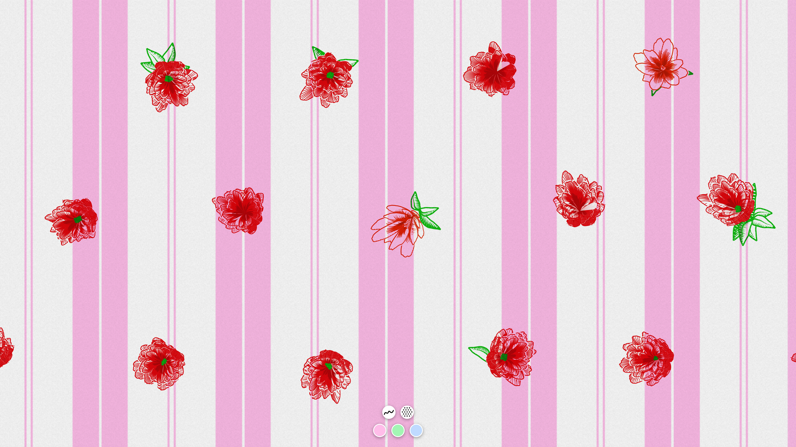
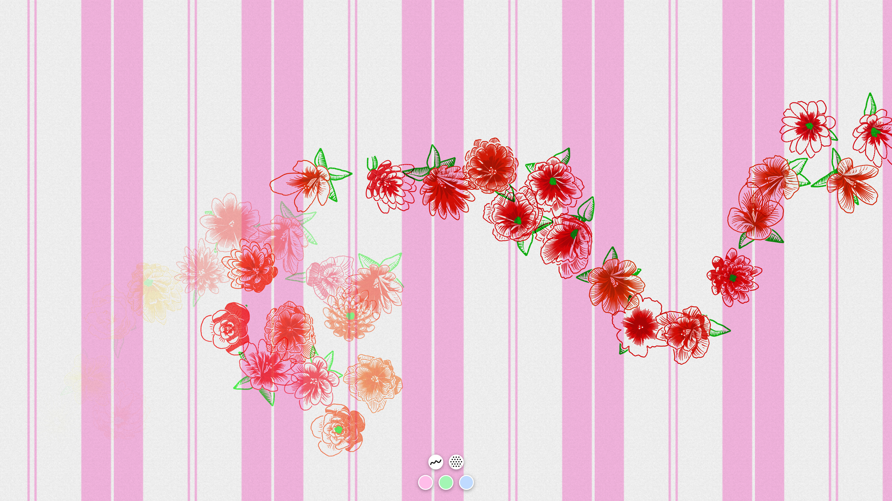
Here’s a link to the kumot webtoy!